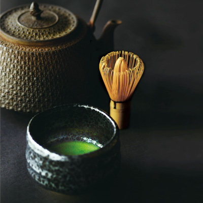
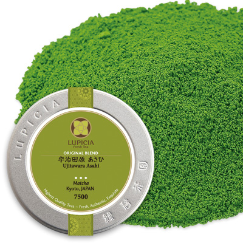

우지전원 아사히
宇治田原 あさひ


抹茶の最高品種「あさひ」で作った宇治の抹茶。翡翠のように色鮮やかな茶葉を、ゆっくり時間をかけて挽き上げました。お茶の甘みがじわりと広がります。
（産地）
京都府綴喜郡（つづきぐん）宇治田原町
京都府南部の宇治川上流の山間地域に位置し、朝霧が立ち込める風土が茶作りに適した地域で、古くより茶業が町の主幹産業となっています。江戸時代の1738年、永谷宗円が現代煎茶の基となる製茶法を編み出した場所として有名な歴史ある産地です。
（特徴）
翡翠を思わせる非常に鮮やかな明るい緑色の外観、水色で、風味には厚みと奥行き、豊かな甘みがあります。
抹茶の醍醐味が味わえる、特に自信を持っておすすめする抹茶です。
（製法）
石臼挽き
【産地・農園特定の抹茶について】
近年、製菓用や輸出用の比較的価格の安い抹茶が生産量を伸ばしていますが、長い伝統を誇る手摘み・石臼挽きの上級抹茶を丁寧に茶筅で立てていただく満足感は何物にも代えがたいものがあります。
手間暇かけた覆い下栽培（※）と肥培管理、一つ一つ丁寧に手摘みされた葉を石臼で時間をかけて挽いたその風味は、香りが圧倒的に甘く濃厚で味わいには長い余韻と奥行きがあり、たった一杯でこんなにも満ち足りるお茶は世界でも類を見ません。
機械で粉砕した抹茶や、日本以外の国で作られたものとは風味に明確な違いがあり、その上質な風味がニューヨークなど海外でも認識され、ブームを巻き起こしつつあります。
生産量トップの京都府の抹茶は、古くからの抹茶用品種の栽培が盛んで、抹茶特有の甘い香りが最も強く、甘みに厚みがあるところに特徴があらわれています。
生産家や製法によるバリエーションが最も多彩です。
生産量第二位の愛知県（西尾市が中心）の抹茶は、緑色が鮮やかで味わいが濃厚でまるみがあるものが多く見られます。
押しなべて栽培技術レベルが高く特定の用途向けに契約栽培をしている農家が多いのが特徴です。
生産量第三位の静岡県（岡部・天竜）は、日本緑茶の最大産地らしく、その代名詞といえるやぶきたを使った抹茶が主流です。
標高の高い地域で作られており、香り立ちが良く爽やかなのと、甘過ぎない適度な渋みがすっと味わいを引き締める点が特徴です。
※覆い下栽培
日射光を遮って新芽を生育させる栽培法。
藁や葭簀（よしず）、寒冷紗（多くは黒い化繊）を使用して、玉露や碾茶（てんちゃ・粉砕前の抹茶）の場合は最終遮光度95-98%で約20日間、一番茶のかぶせ茶の場合は60-75%で7-10日間程度長期に渡って日光を遮って栽培する方法。
被覆だけでなく、一般の茶園管理・肥培条件等も煎茶用の茶園よりはるかに入念に行われることが多い。
- 상품번호
- 7500
- 상품 형태
- 20g 쁘띠캔입
- 가격
- 1,500円 【長期일시품절】
- 판매 안내
- ※상미기한：제조일로부터반년
- 원재료
- 緑茶（日本）※商品の改定などにより、商品パッケージの記載内容が上記内容と一部異なる場合がございます。
- 원산지
- 日本※商品の改定などにより、商品パッケージの記載内容が上記内容と一部異なる場合がございます。